Session 310 · review page · The dark tiles, built
Your two rulings are in the tokens, not hand-painted. Below is the banking demo before, after and with the option on, then every library component whose dark picture changed, then four things the build turned up.
01 · As built · Console (Mono and Common paint the same)
Only the tile colour moved. The ground, the page, the text and every ink are as they were. The option is a plain setting on the page, data-dark-tiles="grey", which puts the black on the ground and the grey on the tiles.
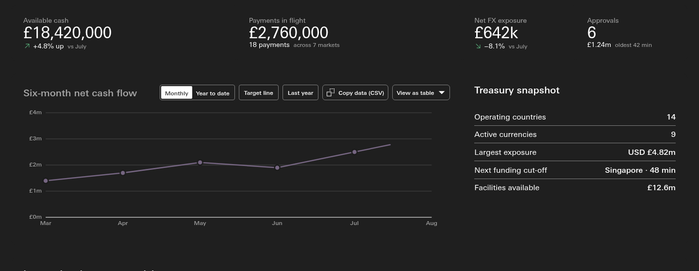
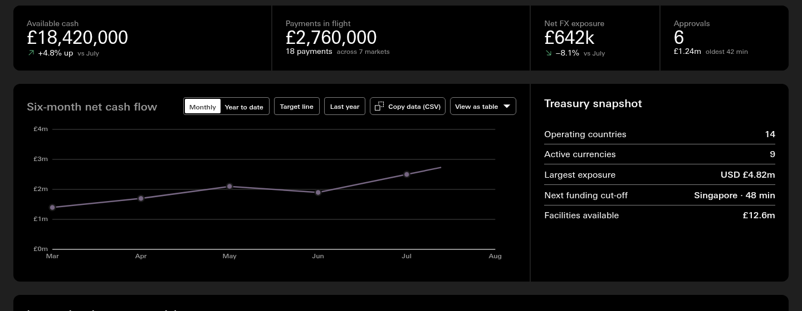
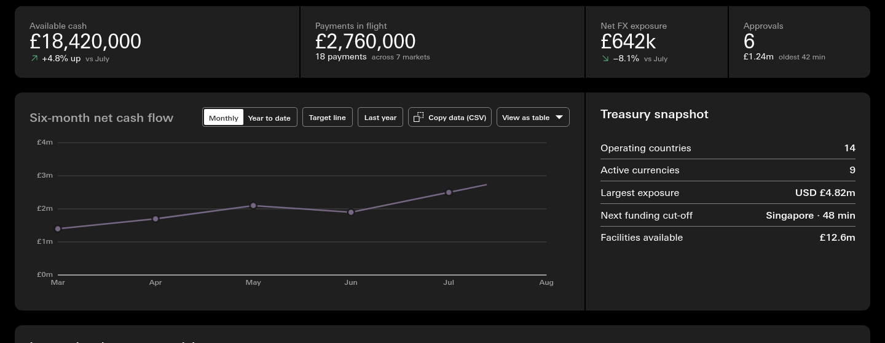
data-dark-tiles="grey" on the page's [data-theme] element, or on anything around it. It only acts in dark mode; light mode never changes.knowledge/tokens/themes/_themes.json, under options · dark-tiles, with the words a person would see and a ready question for a chat prompt. The edit mode can read it from there when it is built.record: s310-D3 enacted at 8db81543 · colours read from the rendered page (body, bento, first tile)
02 · Supercharge
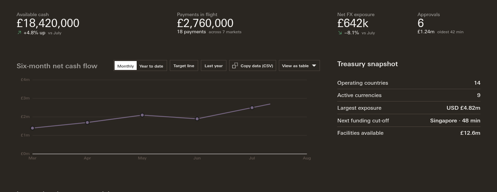
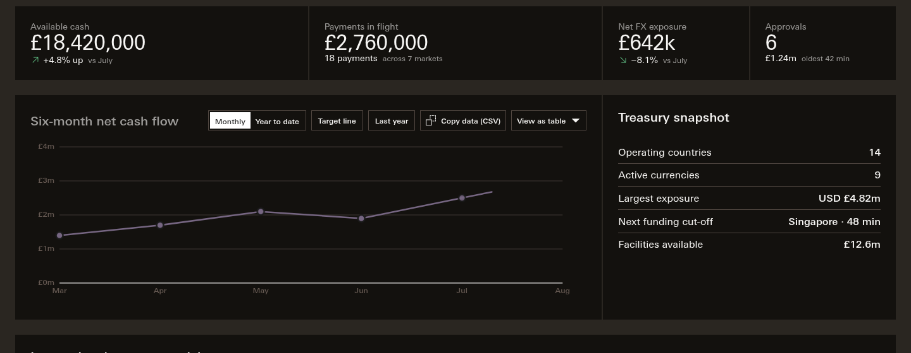
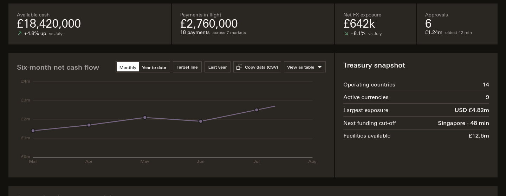
record: s310-D4 enacted at 8db81543
03 · The library · 51 components changed in dark
Each picture is the component's own reference page in dark mode, before on the left, after on the right. Fifty-one of 137 changed. The twelve below are the clearest; the other thirty-nine are grouped underneath.
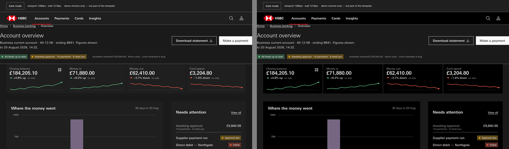
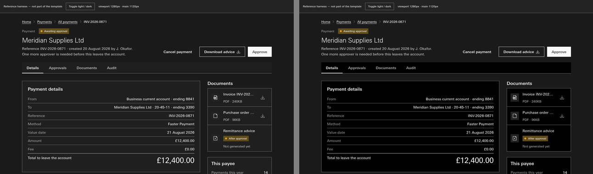
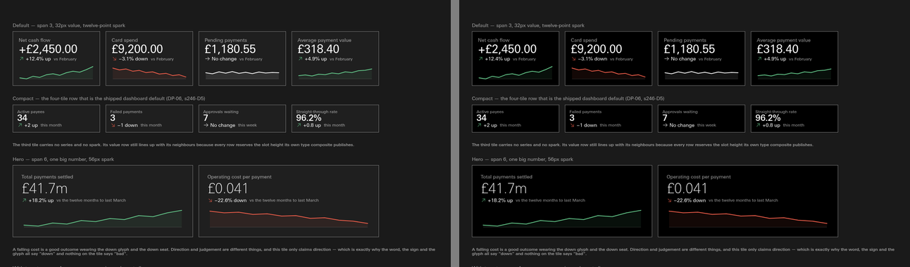
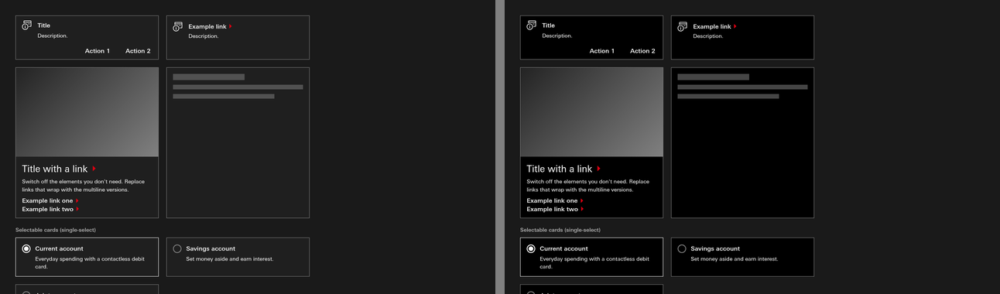
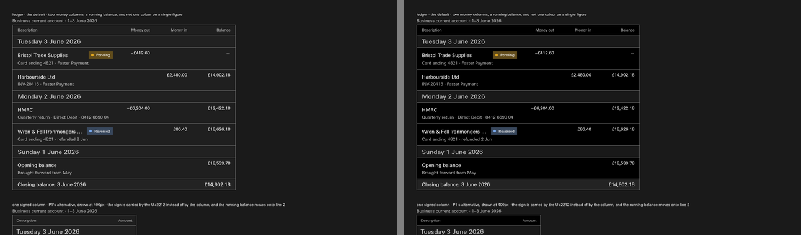
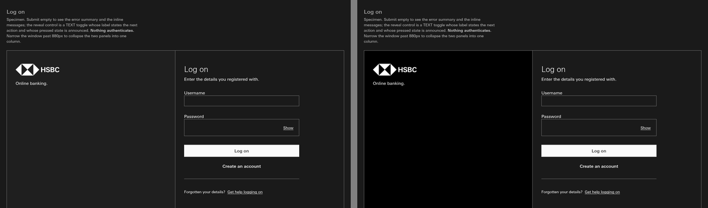
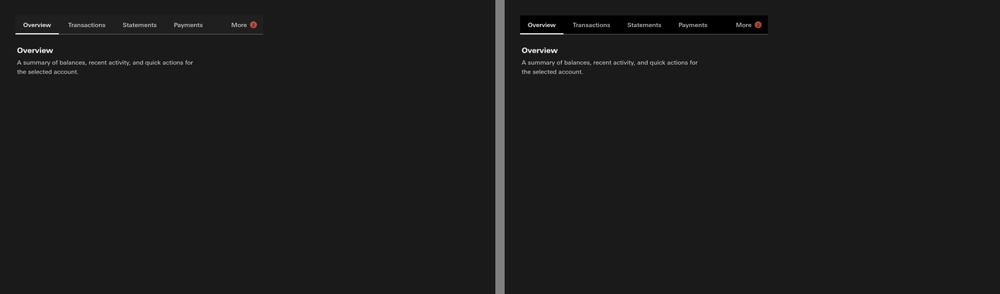
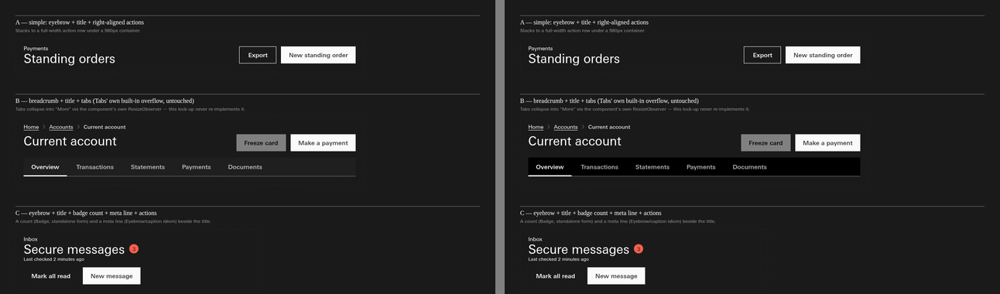
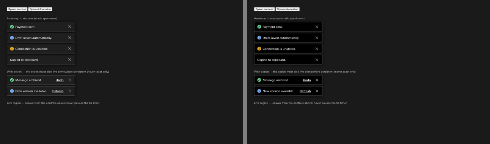
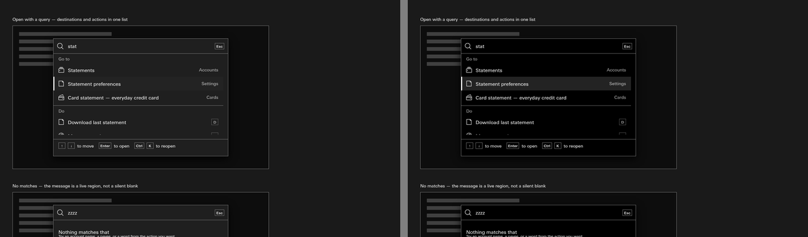
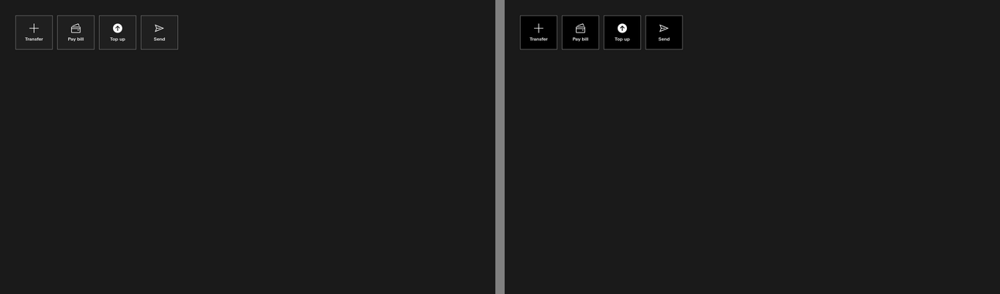
Group one: Settings, Dashboard, App shell multi-column, Stats band, Transfer list, Sidebar nav, Create and edit, App shell split, App shell doormat, Anchor nav, Wizard, Tab bar, View options. Group two: Standing order row, Payment card, Document row, List items, Confirmation, App shell nav rail, Card header, Tree, Account card, Navigations, Reorder, Filter toolbar, Range slider. Group three: Feature grid, Timeline, App shell side nav, Report, App shell focused, Stat card, App shell top nav, Drawer, Image block, Action bar, Carousel, List index, Slider.
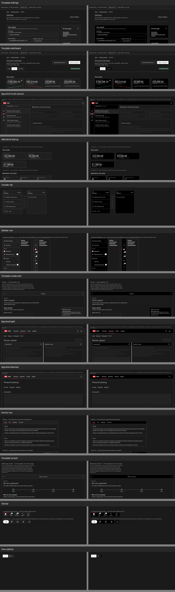
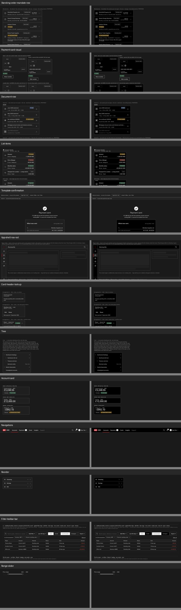
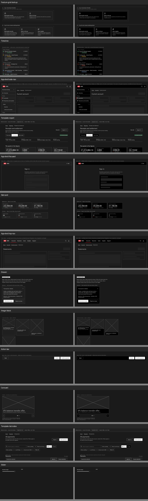
Six more components changed in states the reference page does not open by default (the modals, the hero variants, avatar group, layout utilities, empty state); they follow the same token.
04 · Four calls the build turned up
The tile's pressed and active states were always Supercharge's darkest, #13110E, because they sat darker than the old grey tile. Now the resting tile is that same #13110E, so a press shows nothing. In Mono the pressed state (#1A1A1A) still differs from black, and it moves away from the extreme exactly as it does in light mode.
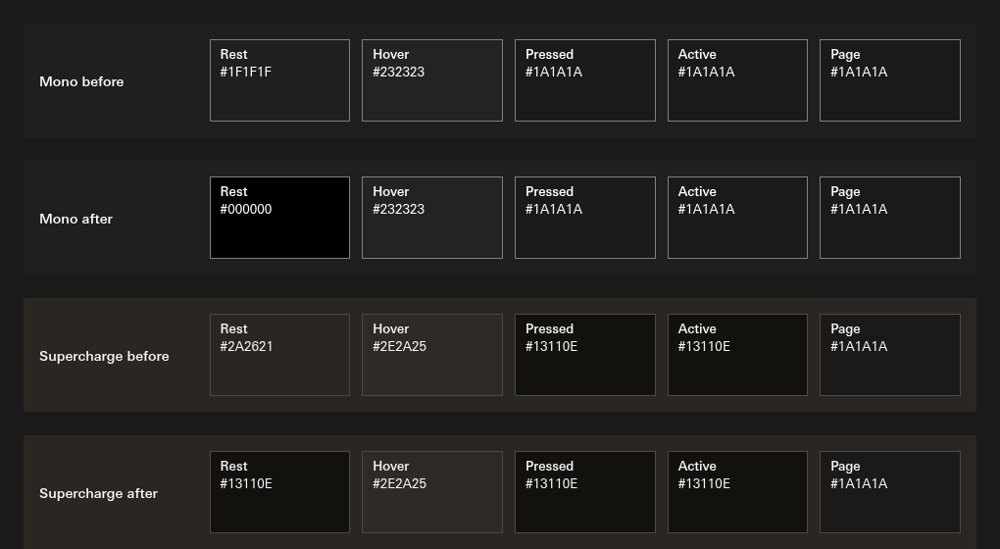
What should a pressed or active Supercharge tile be in dark?
Recommendation: one step lighter than rest, #25211C (the warm ramp's step 4), which does in brown what Mono does with #1A1A1A over black. Nothing is changed until you say.
Apollo's page colour in dark is "digital black", #1A1A1A, not #000, and its note says why: white on pure black is the harshest edge there is (21:1) and makes text shimmer. The note says pure black is for borders and marks, not for surfaces carrying text. The tiles carry text, and they are now #000. You chose it by eye, and it reads well in the renders above.
Keep the black tiles, and write them into the digital black note as the one exception?
Recommendation: yes. You chose black by eye, and the note should say so rather than contradict the tokens.
The tab strip's background follows the tile. In light mode that is white on a white page, so no band shows. In dark it is now black on the #1A1A1A page, so Tabs, the page header and the detail template each gain a black strip (pictures in section 03). If the strip followed the page instead, light would not change and dark would lose the band.
Should the tab strip follow the tile or the page?
Recommendation: follow the page, so a tab strip never draws a band in either mode.
There was no register for page-level settings, so the option is written into the theme register, beside the four themes, under a new heading, options. Its name on a page is data-dark-tiles, with the values black (the default) and grey. Later page settings would join it there.
Keep the name and that home?
Recommendation: yes. The theme register is already what every theme picker reads.
05 · Anything else
Anything else on this page
surface/raised dark in knowledge/tokens/semantic-colour.json now aliases color/black #000000 (was color/neutral/raise-1 #1F1F1F); its cached followers tertiary/background/default, tabs/background, tabs/overflow-background re-stamped. Supercharge (s310-D4): surface/raised in apollo-supercharge.overrides.json, dark #13110E (warm/2), light restating #F7F6F4 (warm/15). surface/subtle and the page are untouched.options.dark-tiles in knowledge/tokens/themes/_themes.json; knowledge/canon/gen_theme_cascade.py emits it into a new AUTO-THEME-OPTIONS region of canon.css, for Mono and for each theme whose values differ (today Supercharge), at root and component tier. Supercharge's component tier carries baked colours, which is why the option had to be generated, not hand-written.notes/_lanes/310/A/render_310A.py (demo at 1440, reference pages at 1280 in Mono dark, before = the tree at 3737c6f7) and render_states.py for the swatches. Ten further components differed only by animation (charts, loaders) and are left out.